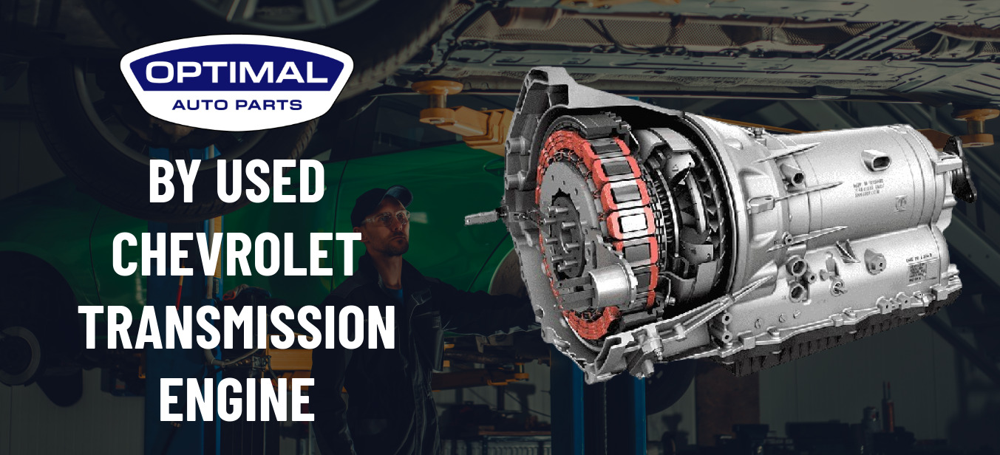
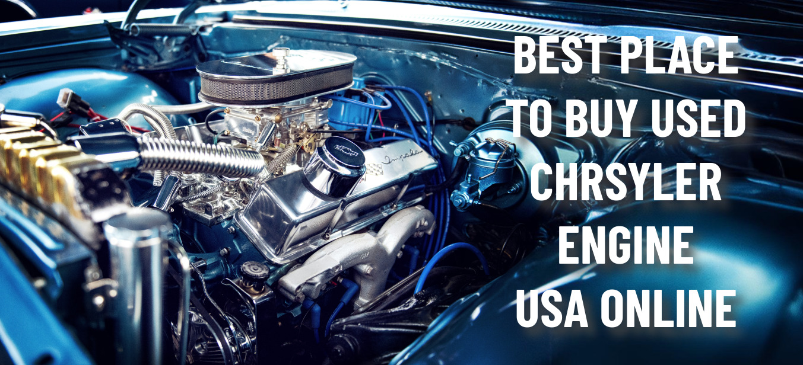

Sales Enquiry
Track your order: (857) 344-0627
Used Engines
Used Transmissions
Brands
Financing
About
Contact
Home
About
Used Engines
Used Transmissions
Contact Us
Financing
Blogs
Home
Blogs
Cost-Effective Engine Options: Benefits of Choosing Used Ford Engines
The Best Places to Buy Used Ford Engines: Tips for Smart Shopping
Things to Consider Before Purchasing a Used Ford Engine for Your Car
What to Consider When Choosing a Used Ford Engine for Your Vehicle
Where to Buy Used Audi Engine and Transmission Near Me in the USA
Which Audi Used Engine and Transmission Should You Trust in 2024?
Common Problems with Used Audi Engines and Tips for Avoiding Them
Top Places for Used Audi A4 Engines and Transmissions for Sale in the USA
Why Optimal Auto Parts Is the Best Place to Buy a Used BMW Engines USA
Used BMW Engines: Common Problems and Expert Guide on How to Fix Them
Maintaining Your Used BMW Transmission: Tips and Best Practices
Where to buy used BMW engines near me in USA
Best Places to Buy Used Chevrolet Transmissions USA Online
Chevrolet Used Engines and Auto Parts Near Me in the USA

Buy & Install Used Chevrolet Transmission & Engine

Best Place to Buy Used Chrysler Engine USA Online
Where will I find a used Ford Engine in the US for my vehicle?
Where to Buy Quality Used Ford Transmissions near Me in the USA
Why Optimal Auto Parts Is the Best Place to Buy a Used Transmissions USA
6 Powerful Tips for How to Maintain a Used Transmission
BMW Horsepower King: The 3 Most Powerful Cars Ever Produced
The Importance and Future of
Tire Recycling
The Advantages of Buying Used Nissan Cars and Auto Part
Everything You Should Know Before Buying a Used Nissan Altima
Discover the Advantages of BMW 316d Used Engines
7 Key Tips for Repairing Your Used Ford Truck-F150 Transmission
Advantages of Using Pre-Owned Auto Parts
The best Car with used manual transmissions for 2024
Do Dealerships Change Transmission Fluid on Used Cars? Unveiling the Trut
Where Should I Buy Used Engine and Used Transmissions in the US?
How to Exchange a Part of a Car on Finance
8 Easy Steps to Check Your Car Engine Oil Level Good or Bad
Certified Used Engines and Car Parts - Best Way to Save Money